Elium Studio
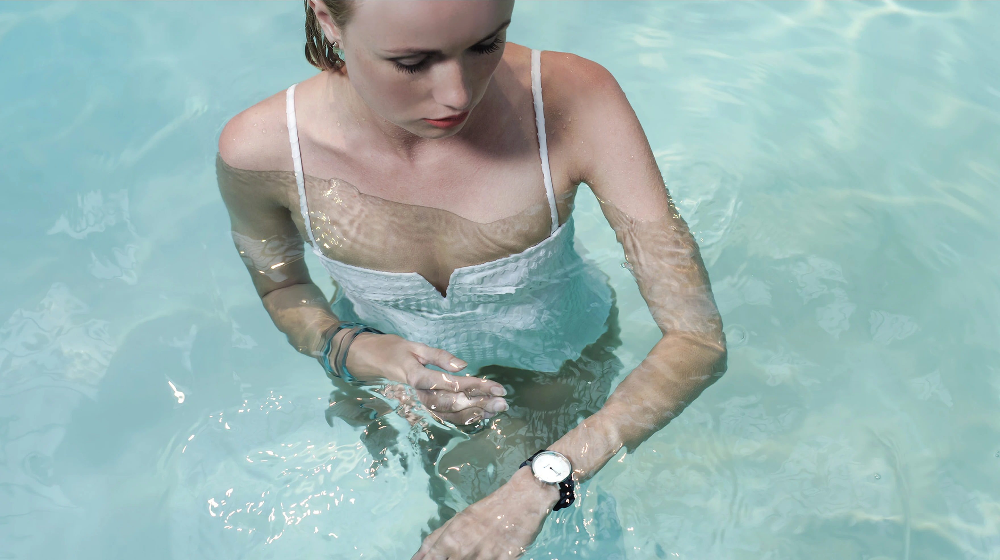
February 2019
Elium Studio is a Parisian global design studio driving positive change by applying a design that knows no limits.
The studio works with a wide network of trustful partners. Model makers, engineering of fices, eco-design consultants, UX designers, developers, photographers, film-makers .
-
Project manager
Caroline Varina Sourivong
-
Designer
Thibault Barbedette
-
Designer
Hugo Chaffiote
-
Developement
Poignée de main virile
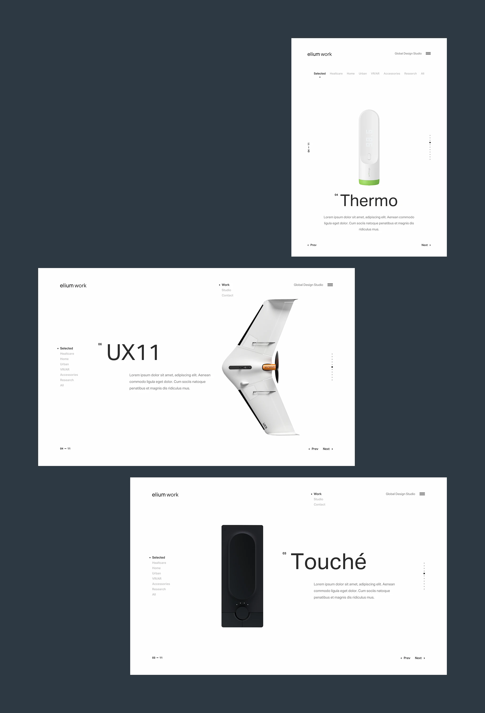
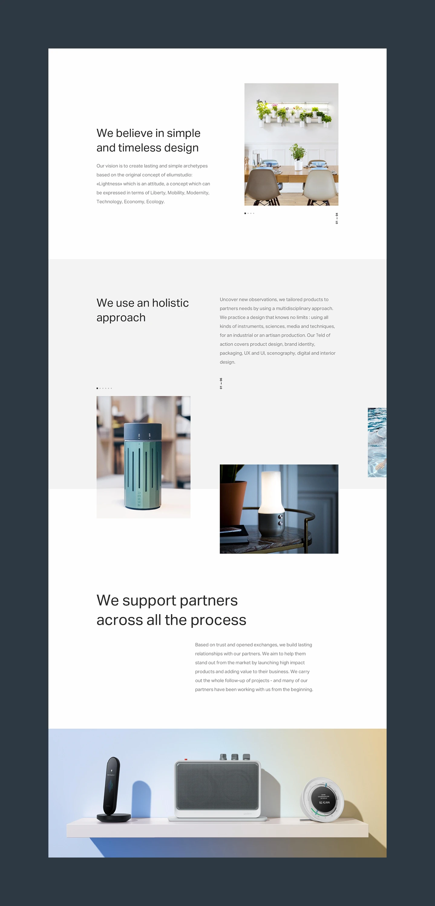
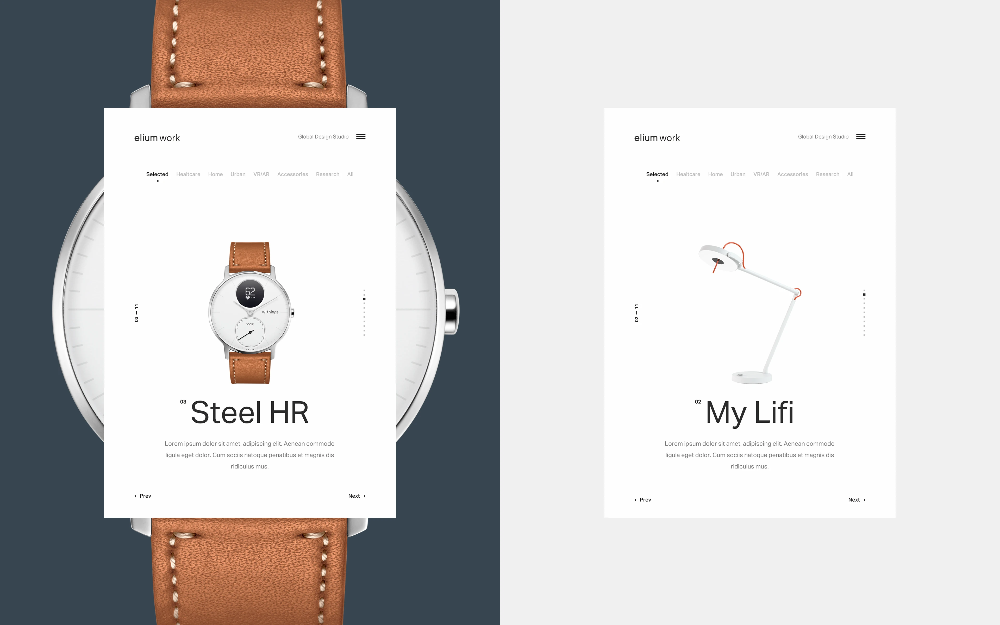
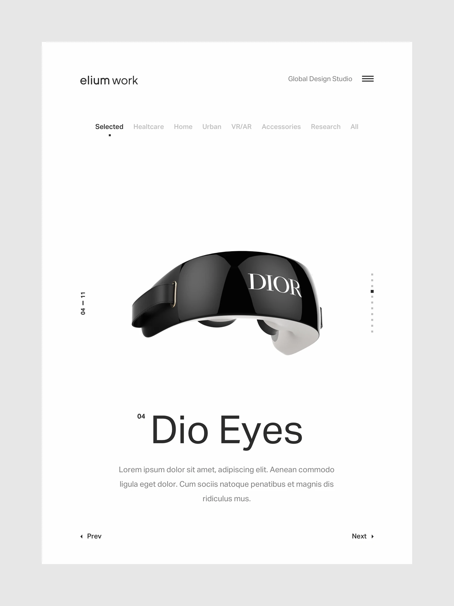
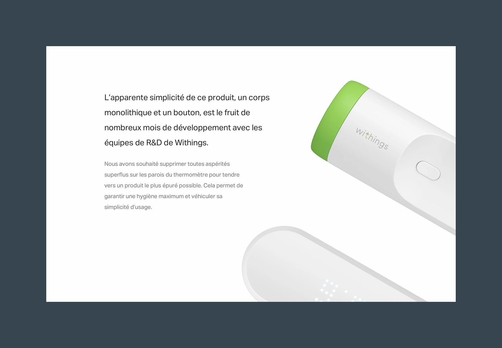
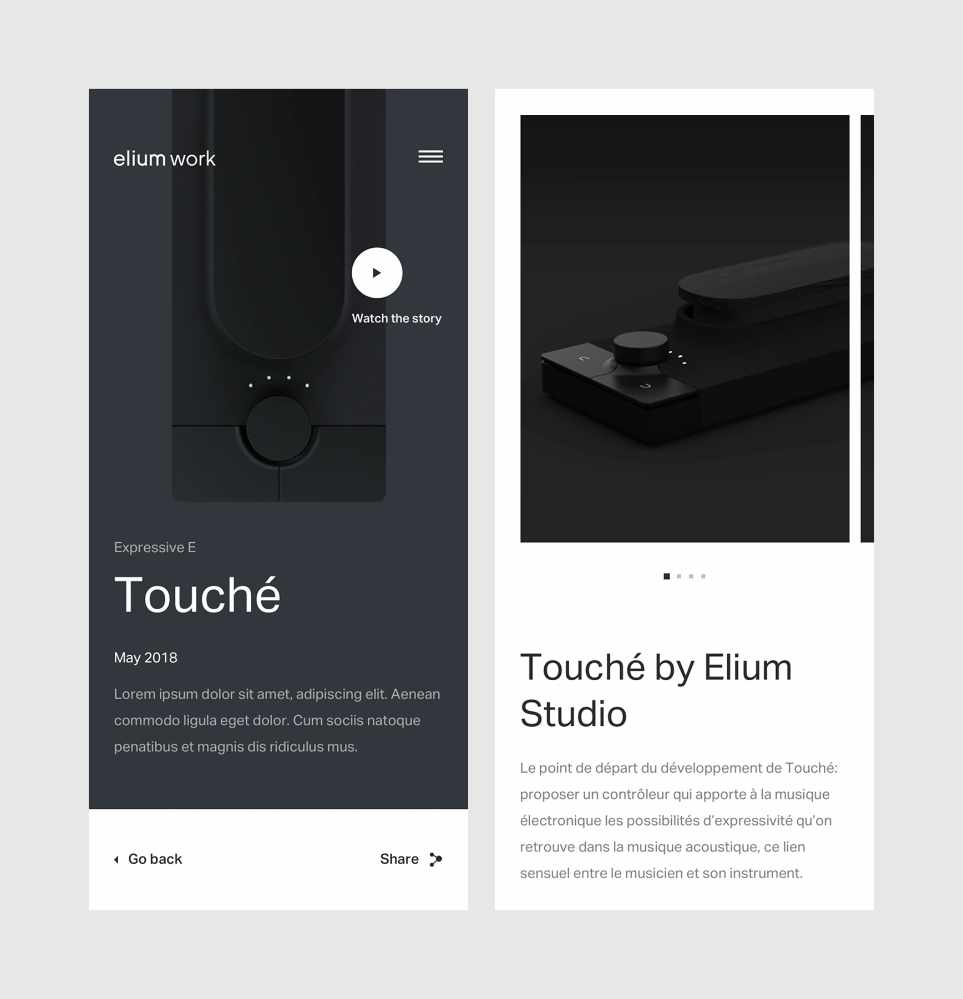
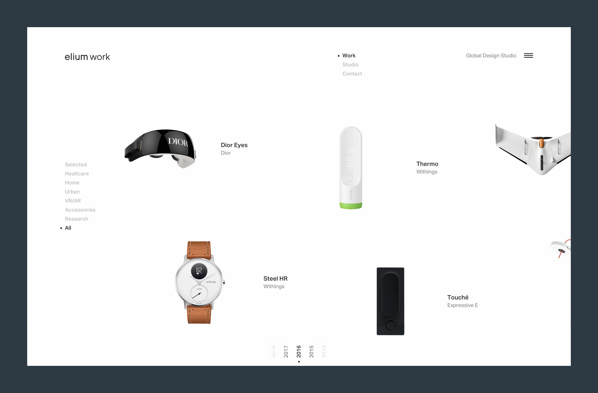
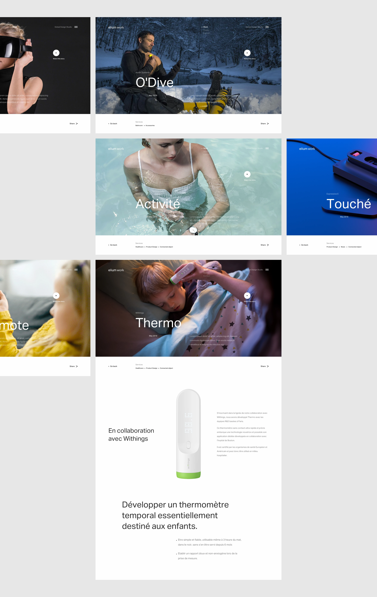
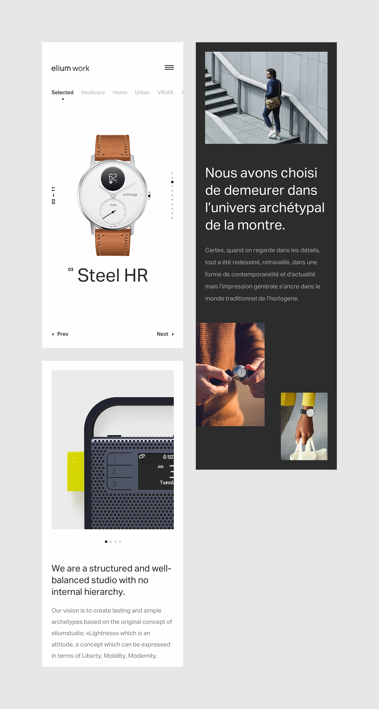
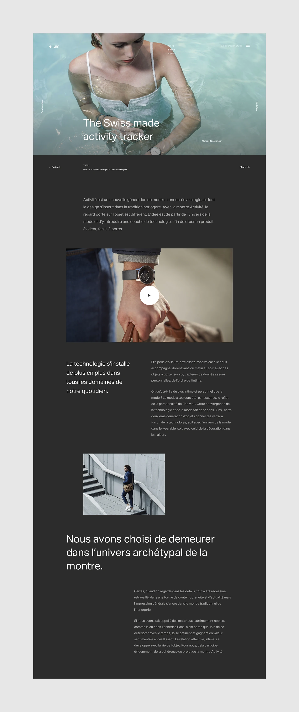
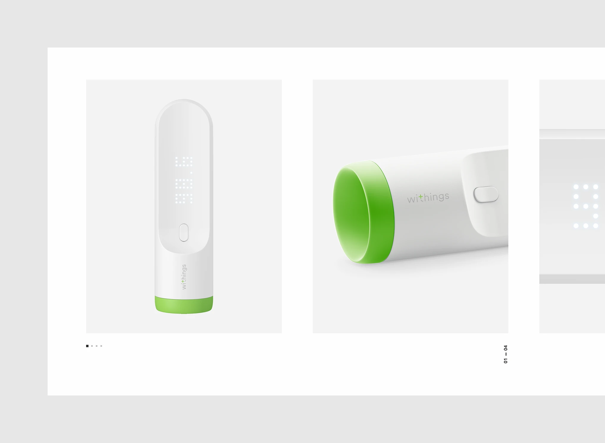
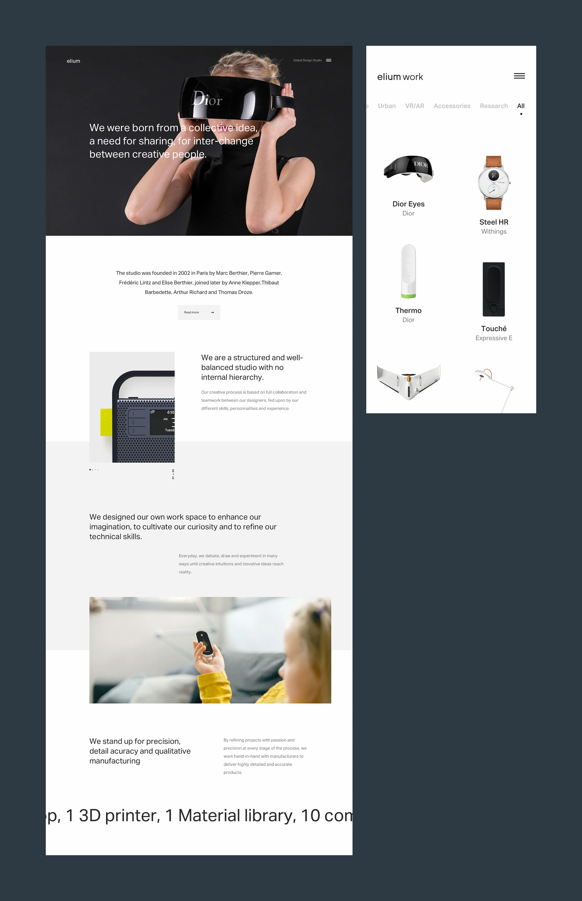
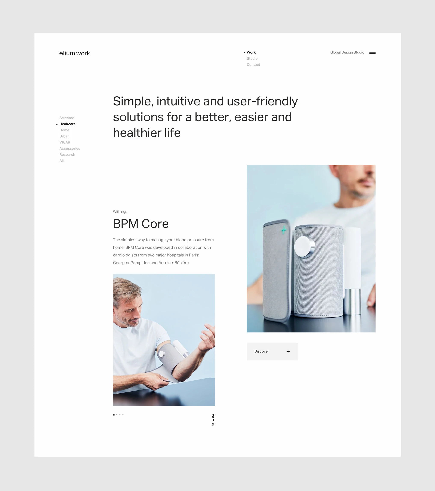